Chapter 3: Conformation and stereochemistry
Contents
Chapter 3: Conformation and stereochemistry#

(Credit: https://www.flickr.com/photos/nate/)
In 1848, a 25 year old chemist named Louis Pasteur made a startling - and some thought brash - claim to the scientific community. Pasteur was inexperienced, to say the least: he had only earned his doctorate the previous year, and had just started his first job as an assistant to a professor at the Ecole normale superieure, a university in Paris. Jean-Baptiste Biot, a highly respected physicist who had already made major contributions to scientific fields as diverse as meteorites, magnetism, and optics, was intrigued but unconvinced by Pasteur’s claim. He invited the young man to come to his laboratory and reproduce his experiments.
Decades earlier, Biot had discovered that aqueous solutions of some biologically-derived substances, such as tartaric acid, quinine, morphine, and various sugars, were optically active: that is, plane polarized light would rotate in either a positive (clockwise, or right-handed) or negative (counter-clockwise, or left-handed) direction when passed through the solutions. Nobody understood the source of this optical property.
One of the biological substances known to be optically active was a salt of tartaric acid, a compound found in abundance in grapes and a major by-product of the wine-making industry.

fig 1b
The compound was dextrorotatory in solution – in other words, it rotated plane-polarized light in the positive (right-handed, or clockwise) direction. Curiously, though, chemists had also found that another form of processed tartaric acid was optically inactive, despite that fact that it appeared to be identical to the optically active acid in every other respect. The optically inactive compound was called ‘acide racemique’, from the Latin racemus, meaning ‘bunch of grapes’.
Louis Pasteur’s claims had to do with experiments he said he had done with the ‘racemic’ acid. Jean-Babtise Biot summoned Pasteur to his laboratory, and presented him with a sample of racemic acid which he himself had already confirmed was optically inactive. With Biot watching over his shoulder, and using Biot’s reagents, Pasteur prepared the salt form of the acid, dissolved it in water, and left the aqueous solution in an uncovered flask to allow crystals to slowly form as the water evaporated.
Biot again summoned Pasteur to the lab a few days later when the crystallization was complete. Pasteur placed the crystals under a microscope, and began to painstakingly examine their shape, just as he had done in his original experiments. He had recognized that the crystals, which had a regular shape, were asymmetric: in other words, they could not be superimposed on their mirror image. Scientists referred to asymmetric crystals and other asymmetric objects as being ‘chiral’, from the Greek word for ‘hand’. Your hands are chiral objects, because although your right hand and your left hand are mirror images of one another, they cannot be superimposed. That is why you cannot fit your right hand in a left-handed glove.
More importantly, Pasteur had claimed that the chiral crystals he was seeing under the lens of his microscope were of two different types, and the two types were mirror images of each other: about half were what he termed ‘right handed’ and half were ‘left-handed’. He carefully separated the right and left-handed crystals from each other, and presented the two samples to Biot. The eminent scientist then took what Pasteur told him were the left-handed crystals, dissolved them in water, and put the aqueous solution in a polarimeter, an instrument that measures optical rotation. Biot knew that the processed tartaric acid he had provided Pasteur had been optically inactive. He also knew that unprocessed tartaric acid from grapes had right-handed optical activity, whereas left-handed tartaric acid was unheard of. Before his eyes, however, he now saw that the solution was rotating light to the left. He turned to his young colleague and exclaimed, ” Mon cher enfant, j’ai tant aime ́ les sciences dans ma vie que cela me fait battre le coeur!’ (My dear child, I have loved science so much during my life that this makes my heart pound!)
Biot had good reason to be so profoundly excited. Pasteur had just conclusively demonstrated, for the first time, the concept of molecular chirality: molecules themselves - not just macroscopic objects like crystals - could exhibit chirality, and could be separated into distinct right-handed and left-handed ‘stereoisomers’. Tying together ideas from physics, chemistry, and biology, he had shown that nature could be chiral at the molecular level, and in doing do he had introduced to the world a new subfield which came to be known as ‘stereochemistry’.
About ten years after his demonstration of molecular chirality, Pasteur went on to make another observation with profound implications for biological chemistry. It was already well known that ‘natural’ tartaric acid (the right-handed kind from grapes) could be fermented by bacteria. Pasteur discovered that the bacteria were selective with regard to the chirality of tartaric acid: no fermentation occurred when the bacteria were provided with pure left-handed acid, and when provided with racemic acid they specifically fermented the right-handed component, leaving the left-handed acid behind.
Pasteur was not aware, at the time of the discoveries described here, the details of the structural features of tartaric acid at the molecular level that made the acid chiral, although he made some predictions concerning the bonding patterns of carbon which turned out to be remarkably accurate. In the more than 150 years since Pasteur’s initial tartaric acid work, we have greatly expanded our understanding of molecular chirality, and it is this knowledge that makes up the core of this chapter. Put simply, stereochemistry is the study of how bonds are oriented in three-dimensional space. It is difficult to overstate the importance of stereochemistry in nature, and in the fields of biology and medicine in particular. As Pasteur so convincingly demonstrated, life itself is chiral: living things recognize different stereoisomers of organic compounds and process them accordingly.
(Acta. Cryst. 2009, A65, 371; Chirality 2008, 20, 5; Chirality 2008, 20, 1072)
Molecular models are your friend!
Because this chapter deals extensively with concepts that are inherently three-dimensional in nature, it will be very important for you to use a molecular modeling kit that is specifically intended for organic chemistry. Many of the ideas we will be exploring can be extremely confusing if you are limited to the two dimensions of this page. Be prepared to follow along with these discussions in three dimensions, with a molecular model in your hands!
**
**
Section 3.1: Conformations of open-chain organic molecules#
Before we begin our exploration of stereochemistry and chirality, we first need to consider the subject of conformational isomerism, which has to do with rotation about single bonds.
We learned in section 2.1B that single bonds in organic molecules are free to rotate, due to the ‘end-to-end’ (σ) nature of their orbital overlap. Consider the carbon-oxygen bond in ethanol, for example: with a 180o rotation about this bond, the shape of the molecule would look quite different:

fig 1a
Or ethane: rotation about the carbon-carbon σ bond results in many different possible three-dimensional arrangements of the atoms.
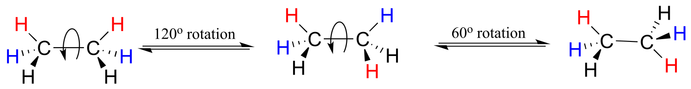
fig 1
These different arrangements, resulting from σ bond rotation, are referred to in organic chemistry as conformations. Any one specific conformation is called a conformational isomer, or conformer.
In order to better visualize different conformations of a molecule, it is convenient to use a drawing convention called the Newman projection. In a Newman projection, we look lengthwise down a specific bond of interest – in this case, the carbon-carbon bond in ethane. We depict the ‘front’ atom as a dot, and the ‘back’ atom as a larger circle.

fig 2
The six carbon-hydrogen bonds are shown as solid lines protruding from the two carbons. Note that we do not draw bonds as solid or dashed wedges in a Newman projection.
Looking down the C-C bond in this way, the angle formed between a C-H bond on the front carbon and a C-H bond on the back carbon is referred to as a dihedral angle. (The dihedral angle between the hour hand and the minute hand on a clock is 0o at noon, 90o at 3:00, and so forth).
The lowest energy conformation of ethane, shown in the figure above, is called the ‘staggered’ conformation: all of the dihedral angles are 60o, and the distance between the front and back C-H bonds is maximized.
If we now rotate the front CH3 group 60° clockwise, the molecule is in the highest energy ‘eclipsed’ conformation, where the dihedral angles are all 0o (we stagger the bonds slightly in our Newman projection drawing so that we can see them all).
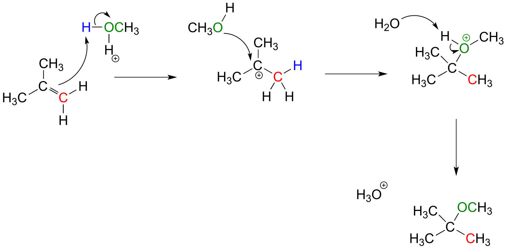
fig 3
The energy of the eclipsed conformation, where the electrons in the front and back C-H bonds are closer together, is approximately 12 kJ/mol higher than that of the staggered conformation.
Another 60° rotation returns the molecule to a second staggered conformation. This process can be continued all around the 360° circle, with three possible eclipsed conformations and three staggered conformations, in addition to an infinite number of conformations in between these two extremes.
video tutorial: conformations of ethane
Now let’s consider butane, with its four-carbon chain. There are now three rotating carbon-carbon bonds to consider, but we will focus on the middle bond between C2 and C3. Below are two representations of butane in a conformation which puts the two CH3 groups (C1 and C4) in the eclipsed position, with the two C-C bonds at a 0o dihedral angle.
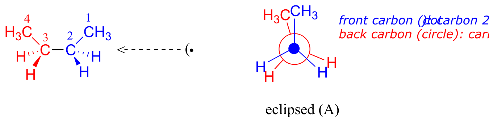
fig 4
If we rotate the front, (blue) carbon by 60° clockwise, the butane molecule is now in a staggered conformation.

fig 5
This is more specifically referred to as the gauche conformation of butane. Notice that although they are staggered, the two methyl groups are not as far apart as they could possibly be.
A further rotation of 60° gives us a second eclipsed conformation (B) in which both methyl groups are lined up with hydrogen atoms.

fig 6
One more 60 rotation produces another staggered conformation called the anti conformation, where the two methyl groups are positioned opposite each other (a dihedral angle of 180o).
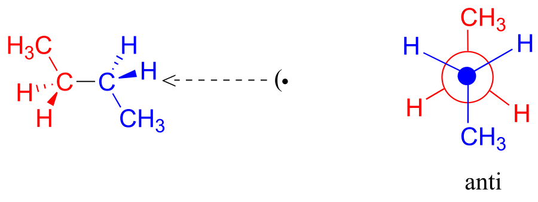
fig 7
As with ethane, the staggered conformations of butane are energy ‘valleys’, and the eclipsed conformations are energy ‘peaks’. However, in the case of butane there are two different valleys, and two different peaks. The gauche conformation is a higher energy valley than the anti conformation due to steric strain, which is the repulsive interaction caused by the two bulky methyl groups being forced too close together. Clearly, steric strain is lower in the anti conformation. In the same way, steric strain causes the eclipsed A conformation - where the two methyl groups are as close together as they can possibly be - to be higher in energy than the two eclipsed B conformations.
The diagram below summarizes the relative energies for the various eclipsed, staggered, and gauche conformations of butane.
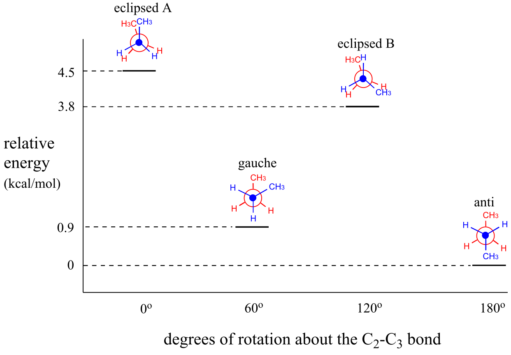
Video tutorial: conformations of butane
Because the anti conformation is lowest in energy (and also simply for ease of drawing), it is conventional to draw open-chain alkanes in a ‘zigzag’ form, which implies anti conformation at all carbon-carbon bonds. The figure below shows, as an example, a Newman projection looking down the C2-C3 bond of octane.
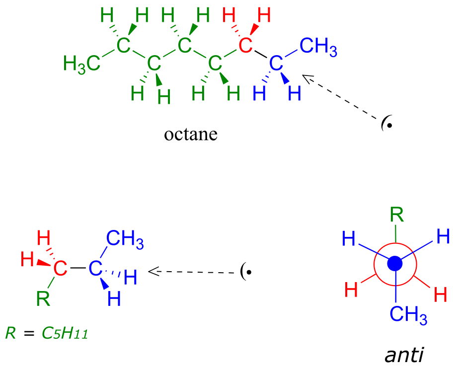fig 8
Exercise 3.1: Draw Newman projections of the lowest and highest energy conformations of propane.
Exercise 3.2: Draw a Newman projection, looking down the C2-C3 bond, of 1-butene in the conformation shown below (C2 should be your front carbon).
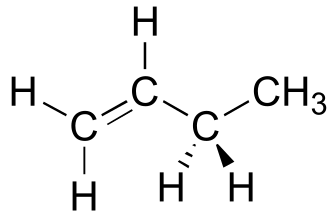
Section 3.2: Conformations of cyclic organic molecules#
Browse through a biochemistry textbook and you will see any number of molecules with cyclic structures. Many of these cyclic structures are aromatic, and therefore planar. Many others, though, are composed of sp3-hybridized atoms, and it is these cyclic structures that are the topic of discussion in this section.
When discussing cyclic organic molecules, we will often use sugars as examples, because they are such important molecules in biological chemistry. It is important to recall (section 1.3C) that many sugars exist in aqueous solution as both open-chain and cyclic forms. You need not worry at this point about understanding how the cyclic form is named, or the reaction by which the cyclization occurs - this will be covered in chapter 10.
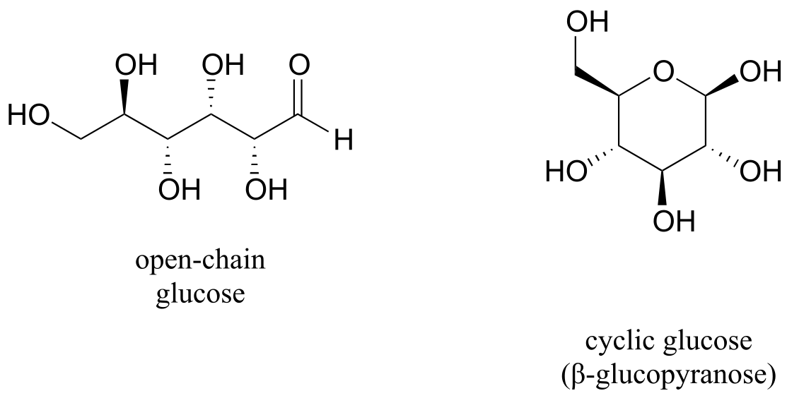
fig 9
One thing that you should notice in the cyclic structure shown above is that atoms or groups bonded to tetrahedral ring carbons are either pointing up (out of the plane of the page) or down (into the plane of the page), as indicated by the use of dashed or solid wedge bonds. When two substituents on the same ring are both pointing toward the same side of the ring, they are said to be cis to each other. When they are pointed to opposite sides, they are said to be trans to each other.
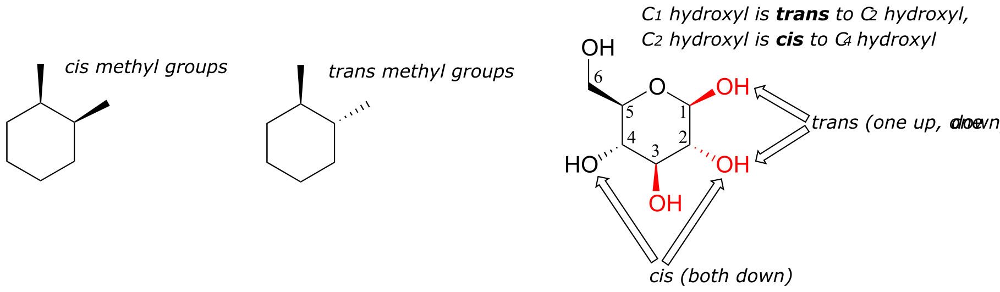fig 10
Ring structures in organic molecules are usually five-membered or six-membered. Three-and four-membered rings are occasionally found in nature, but are significantly higher in energy. The relative instability of these smaller ring structures can be explained by a concept called angle strain, in which the four bonds around the sp3-hybridized carbons are forced out of their preferred tetrahedral angles.

fig 11
If one of the carbon-carbon bonds is broken, the ring will ‘spring’ open, releasing energy as the bonds reassume their preferred tetrahedral geometry. The effectiveness of two antibiotic drugs, fosfomycin and penicillin, is due in large part to the high reactivity of the three- and four-membered rings in their structures.

fig 12
In six-membered cycloalkane structures, bonding angles are close to tetrahedral, and thus ring strain is not a factor – these rings are in fact very stable. However, the ‘flat’ drawings we have been using up to now do not accurately show the actual three-dimensional shape of a five- or six-membered ring. If cyclohexane were indeed flat, the bond angles would have to be distorted from 109.5° to 120°. If you build a model, though, you will find that when you rotate the carbon-carbon bonds so as to put the ring into a shape that resembles a reclining beach chair, all of the carbon-carbon bonds are able to assume tetrahedral bonding angles.
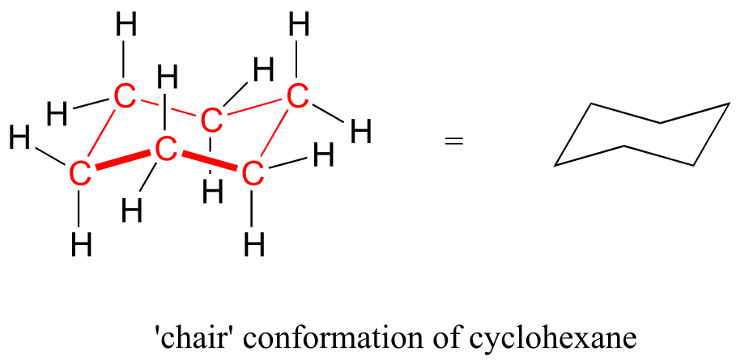
fig 13)
This chair conformation is the lowest energy conformation for cyclohexane and other six-membered rings.
An alternate conformation for a six-membered ring is called the ‘boat’:
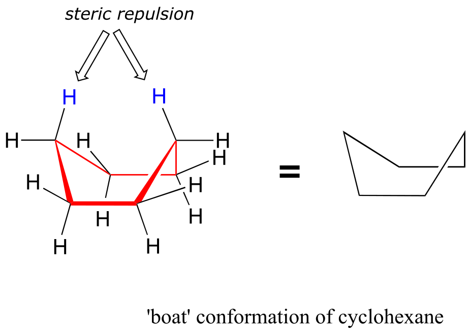
fig 14
In the boat conformation, two of the substituents – those on the ‘bow’ and the ‘stern’ if you will – are brought close enough to each other to cause steric strain. An additional cause of the higher energy of the boat conformation is that adjacent hydrogen atoms on the ‘bottom of the boat’ are forced into eclipsed positions. For these reasons, the boat conformation is a high energy conformation of cyclohexane, about 30 kJ/mol less stable than the chair conformation.
If you look carefully at your model of cyclohexane in the chair conformation, you will see that all twelve hydrogens are not equivalent in terms of their three-dimensional arrangement in space. Six hydrogens are axial – that is, they are pointing either straight up or straight down relative to the ring. The other six hydrogens are equatorial, meaning that they are pointing away from the perimeter of the ring, either slightly up or slightly down*. (The equatorial vs axial distinction is often hard to see at first - it would be a very good idea at this point to sit down with your instructor or tutor and work with a modeling kit).*

fig 15
This is not the only possible chair conformation for cyclohexane. On your model, rotate one of the ‘up’ carbons down, and one of the ‘down’ carbons up. You now have a new, alternate chair conformation – this process is called ring inversion.

fig 16
What you should recognize here is that, as a result of the ring inversion process, all of the axial and equatorial hydrogens have traded positions – axial hydrogens have become equatorial, and vice-versa. Notice, however, that the ‘down’ hydrogens are still pointing down, and the ‘up’ hydrogens are still pointing up regardless of whether they are axial or equatorial. At room temperature, cyclohexane is constantly inverting between two chair forms of equal energy – it is a rapid equilibrium situation. Thus, except at very low temperatures, we are not able to distinguish between axial and equatorial hydrogens, as they are constantly switching back and forth.
axial/equatorial vs cis/trans
A very common error made by organic chemistry students as they begin to learn about chair conformations is to confuse the terms axial and equatorial with the terms cis and trans. These are completely different things! For example, when two substituents on a ring are cis in relation to one another, it means that they are pointed to the same side of the ring (both up or both down). Depending on their positions on the ring, they might both be axial, both be equatorial, or one of each.

Do not make the mistake of calling two substituents trans to each other merely because one is equatorial and one is axial, or cis because the are both axial or both equatorial.
fig 17
How to draw the cyclohexane chair conformation:
As an organic chemistry student, you will be expected to be able to draw an accurate representation of the chair conformations of six-membered cycloalkanes, which includes being able to draw axial and equatorial substituents with their correct orientations. Here, then, are some guidelines to follow:

(How not to draw the chair):
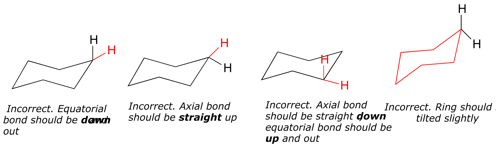
fig 19 fig 18
What happens to the relative energies of chair conformations when the ring has a large substituent, such as a methyl group? Now, the two chair conformations are quite different: in one, the methyl group is equatorial and in the other it is axial.

fig 20
When the methyl group is in the axial position, it is brought close enough to the axial hydrogens on carbons two bonds away to cause destabilizing steric repulsion: this is referred to as 1,3-diaxial repulsion.

fig 21
When in the equatorial position, the methyl group is pointing up and away from the rest of the ring, eliminating the unfavorable 1,3-diaxial interaction. As a consequence, the conformation in which the methyl group is in the equatorial position is more stable, by approximately 7 kJ/mol. At room temperature, methylcyclohexane exists as a rapid equilibrium between the two chair forms (and many other intermediate conformations), but the equilibrium constant (Keq) favors the conformation where the methyl group is equatorial.
**
**
Exercise 3.3: Here’s some General Chemistry review: what is the value of Keq at 25 oC for the axial to equatorial interconversion of methylcyclohexane as shown in the previous figure?
The importance of the steric strain factor increases with the increasing size of a substituent. For example, the difference in energy between the two chair conformations of tert-butyl cyclohexane (24 kJ/mol) is much larger than for methylcyclohexane (7 kJ/mol), because a tert-butyl group is larger than a methyl group and results in more energetically unfavorable 1,3-diaxial interactions.
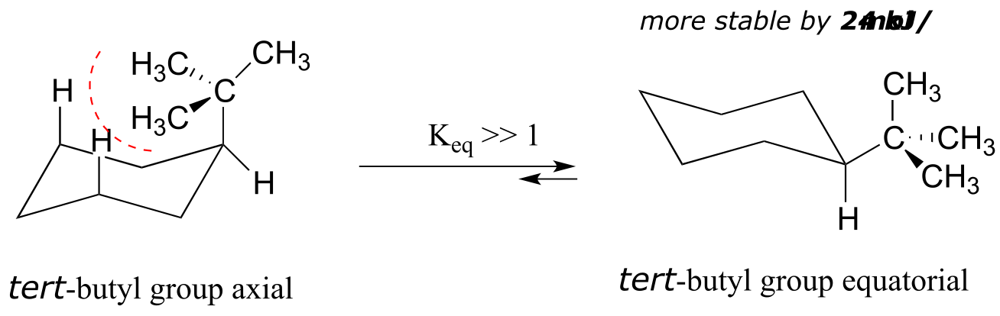
fig 22
In the case of a disubstituted cyclohexane ring in which both substituents cannot be equatorial, the lower energy conformation generally places the bulkier substituent in the equatorial position.
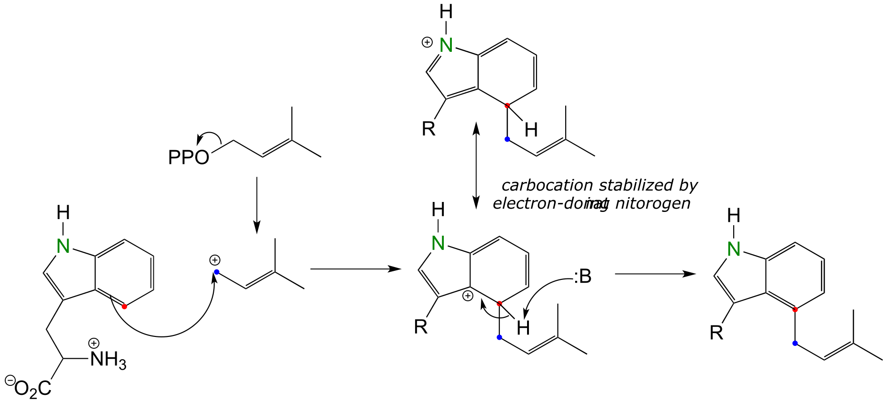
fig 23
As a general rule, the most stable chair conformation of a six-membered ring will be that in which the bulkiest groups are in the equatorial position.
Exercise 3.4: Draw the lower energy chair conformations of a) trans-1,2-dimethylcyclohexane, and b) trans-1-isopropyl-3-methylcyclohexane. Draw all substituents on all carbons (including hydrogens), being sure that the axial or equatorial orientation is clear. Be sure to check your drawing with your instructor or tutor.
Exercise 3.5: Predict which of the following disubstituted hexanes has a greater energy difference between its two chair conformations, and state your reasons for your choices.
a) cis-1,3-dimethylcyclohexane or cis-1,4-dimethylcyclohexane
b) cis-1,2-dimethylcyclohexane or trans-1,2-dimethylcyclohexane
c) trans-1,2-dimethylcyclohexane or trans-1-isopropyl-2-methylcyclohexane
Exercise 3.6: Can a ‘ring inversion’ change a cis-disubstituted cyclohexane to trans? Explain.
Recall that five- and six-carbon sugars such as glucose and fructose exist in solution in open chain and cyclic forms. Glucose, in its most abundant form in solution, is a six-membered ring adopting a chair conformation with all substituents equatorial.
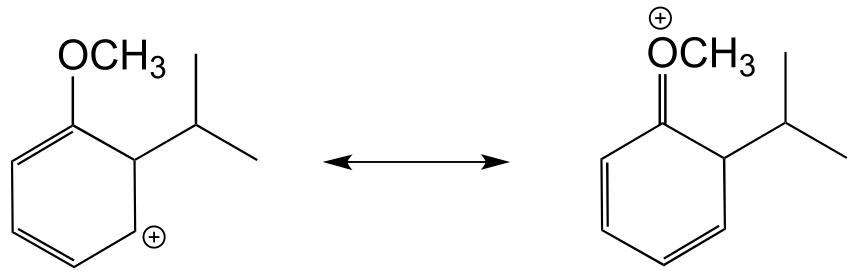
fig 24
The most abundant form of fructose in aqueous solution is also a six-membered ring.
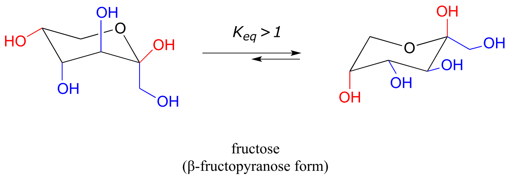
fig 25
The lower energy chair conformation is the one with three of the five substituents (including the bulky –CH2OH group) in the equatorial position.
Exercise 3.7: Draw the two chair conformations of the six-carbon sugar mannose, being sure to clearly show each non-hydrogen substituent as axial or equatorial. Predict which conformation is likely to be more stable, and explain why.
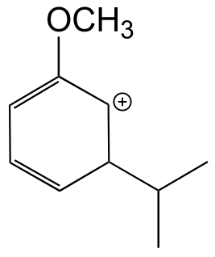
fig 26
Video tutorial: conformations of cyclohexane
The lowest energy conformation of cyclopentane and other five-membered rings is known as the ‘envelope’, with four of the ring atoms in the same plane and one out of plane (notice that this shape resembles an envelope with the flap open). The out-of-plane carbon is said to be in the endo position (‘endo’ means ‘inside’).
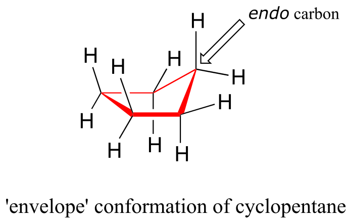
fig 27
The ‘equatorial’ vs ‘axial’ distinction discussed in the context of 6-membered rings does not apply to five-membered rings.
At room temperature, cyclopentane undergoes a rapid pseudorotation process in which each of the five carbons takes turns being in the endo position.
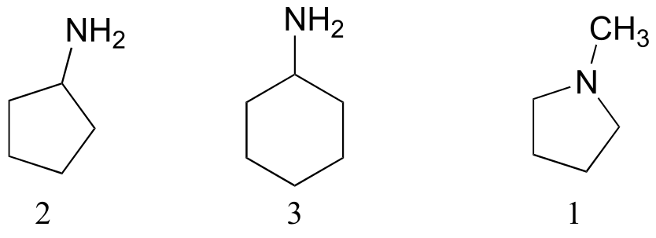
fig 28
One of the most important five-membered rings in nature is a sugar called ribose – recall from section 1.3E that DNA and RNA are both constructed upon ‘backbones’ derived from ribose. Pictured below is one thymidine (T) deoxy-nucleotide from a stretch of DNA:

fig 29
The lowest-energy conformations for ribose are envelope forms in which either the 3’ or 2’ carbons are endo. This has very important implications for oligonucleotide structure – in a DNA double helix, it is C2 that is in the endo position, while in RNA it is C3.
Section 3.3: Chirality and stereoisomers#
We turn now to concept of chirality that formed the basis of the story about Louis Pasteur in the beginning of this chapter. Recall that the term chiral, from the Greek work for ‘hand’, refers to anything which cannot be superimposed on its own mirror image. Your hands, of course, are chiral - you cannot superimpose your left hand on your right, and you cannot fit your left hand into a right-handed glove (which is also a chiral object). Another way of saying this is that your hands do not have a mirror plane of symmetry: you cannot find any plane which bisects your hand in such a way that one side of the plane is a mirror image of the other side. Chiral objects do not have a plane of symmetry.
Your face, on the other hand is achiral - lacking chirality - because, some small deviations notwithstanding, you could superimpose your face onto its mirror image. If someone were to show you a mirror image photograph of your face, you could line the image up, point-for-point, with your actual face. Your face has a plane of symmetry, because the left side is the mirror image of the right side.
What Pasteur, Biot, and their contemporaries did not yet fully understand when Pasteur made his discovery of molecular chirality was the source of chirality at the molecular level. It stood to reason that a chiral molecule is one that does not contain a plane of symmetry, and thus cannot be superimposed on its mirror image. We now know that chiral molecules contain one or more chiral centers, which are almost always tetrahedral (sp3-hybridized) carbons with four different substituents. Consider the cartoon molecule A below: a tetrahedral carbon, with four different substituents denoted by balls of four different colors (for the time being, don’t worry about exactly what these substituents could be - we will see real examples very soon).

fig 3
The mirror image of A, which we will call B, is drawn on the right side of the figure, and an imaginary mirror is in the middle. Notice that every point on A lines up through the mirror with the same point on B: in other words, if A looked in the mirror, it would see B looking back.
Now, if we flip compound A over and try to superimpose it point for point on compound B, we find that we cannot do it: if we superimpose any two colored balls, then the other two are misaligned.

32
A is not superimposable on its mirror image (B), thus by definition A is a chiral molecule. It follows that B also is not superimposable on its mirror image (A), and thus it is also a chiral molecule. Also notice in the figure below (and convince yourself with models) that neither A nor B has an internal plane of symmetry.
A and B are stereoisomers: molecules with the same molecular formula and the same bonding arrangement, but a different arrangement of atoms in space. There are two types of stereoisomers: enantiomers and diastereomers. Enantiomers are pairs of stereoisomers which are mirror images of each other: thus, A and B are enantiomers. It should be self-evident that a chiral molecule will always have one (and only one) enantiomer: enantiomers come in pairs. Enantiomers have identical physical properties (melting point, boiling point, density, and so on). However, enantiomers do differ in how they interact with polarized light (we will learn more about this soon) and they may also interact in very different ways with other chiral molecules - proteins, for example. We will begin to explore this last idea in later in this chapter, and see many examples throughout the remainder of our study of biological organic chemistry.
Diastereomers are stereoisomers which are not mirror images of each other. For now, we will concentrate on understanding enantiomers, and come back to diastereomers later.
We defined a chiral center as a tetrahedral carbon with four different substituents. If, instead, a tetrahedral carbon has two identical substituents (two black atoms in the cartoon figure below), then of course it still has a mirror image (everything has a mirror image, unless we are talking about a vampire!) However, it is superimposable on its mirror image, and has a plane of symmetry.
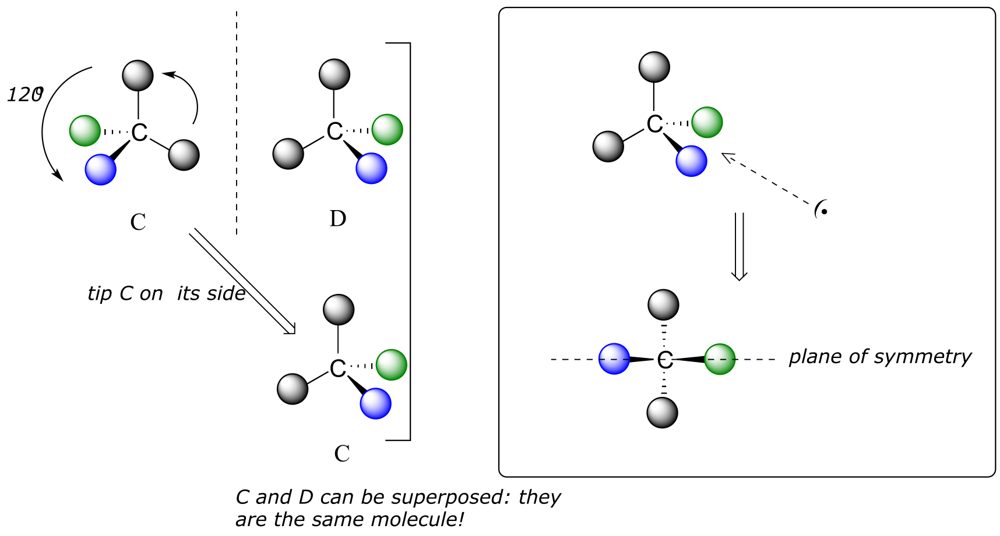
fig 33
This molecule is achiral (lacking chirality). Using the same reasoning, we can see that a trigonal planar (sp2-hybridized) carbon is also not a chiral center.

fig 34
Notice that structure E can be superimposed on F, its mirror image - all you have to do is pick E up, flip it over, and it is the same as F. This molecule has a plane of symmetry, and is achiral.
Let’s apply our general discussion to real molecules. For now, we will limit our discussion to molecules with a single chiral center. It turns out that tartaric acid, the subject of our chapter introduction, has two chiral centers, so we will come back to it later.
Consider 2-butanol, drawn in two dimensions below.
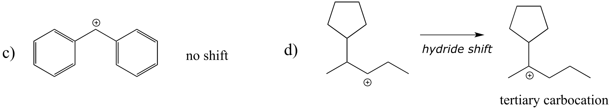fig 35
Carbon #2 is a chiral center: it is sp3-hybridized and tetrahedral (even though it is not drawn that way above), and the four things attached to is are different: a hydrogen, a methyl (-CH3) group, an ethyl (-CH2CH3) group, and a hydroxyl (OH) group. Let’s draw the bonding at C2 in three dimensions, and call this structure A. We will also draw the mirror image of A, and call this structure B.
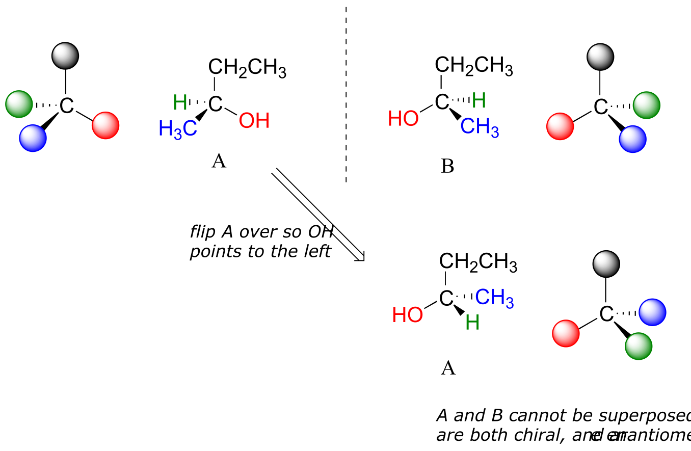
fig 36
When we try to superimpose A onto B, we find that we cannot do it. A and B are both chiral molecules, and they are enantiomers of each other.
2-propanol, unlike 2-butanol, is not a chiral molecule. Carbon #2 is bonded to two identical substituents (methyl groups), and so it is not a chiral center.

fig 37
Notice that 2-propanol is superimposable on its own mirror image.
When we look at very simple molecules like 2-butanol, it is not difficult to draw out the mirror image and recognize that it is not superimposable. However, with larger, more complex molecules, this can be a daunting challenge in terms of drawing and three-dimensional visualization. The easy way to determine if a molecule is chiral is simply to look for the presence of one or more chiral centers: molecules with chiral centers will (almost always) be chiral. We insert the ‘almost always’ caveat here because it is possible to come up with the exception to this rule - we will have more to say on this later, but don’t worry about it for now.
Here’s another trick to make your stereochemical life easier: if you want to draw the enantiomer of a chiral molecule, it is not necessary to go to the trouble of drawing the point-for-point mirror image, as we have done up to now for purposes of illustration. Instead, keep the carbon skeleton the same, and simply reverse the solid and dashed wedge bonds on the chiral carbon: that accomplishes the same thing. You should use models to convince yourself that this is true, and also to convince yourself that swapping any two substituents about the chiral carbon will result in the formation of the enantiomer.
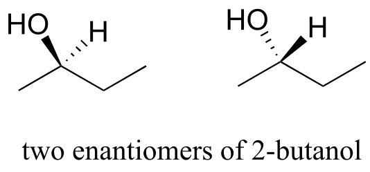
fig 38
Here are four more examples of chiral biomolecules, each one shown as a pair of enantiomers, with chiral centers marked by red dots.

fig 39
Here are some examples of achiral biomolecules - convince yourself that none of them contains a chiral center:

fig 40
When looking for chiral centers, it is important to recognize that the question of whether or not the dashed/solid wedge drawing convention is used is irrelevant. Chiral molecules are sometimes drawn without using wedges (although obviously this means that stereochemical information is being omitted). Conversely, wedges may be used on carbons that are not chiral centers – look, for example, at the drawings of glycine and citrate in the figure above.
Can a chiral center be something other than a tetrahedral carbon with four different substituents? The answer to this question is ‘yes’ - however, these alternative chiral centers are very rare in the context of biological organic chemistry, and outside the scope of our discussion here.
You may also have wondered about amines: shouldn’t we consider a secondary or tertiary amine to be a chiral center, as they are tetrahedral and attached to four different substituents, if the lone-pair electrons are counted as a ‘substituent’? Put another way, isn’t an amine non-superimposable on its mirror image?
The answer: yes it is, in the static picture, but in reality, the nitrogen of an amine is rapidly and reversibly inverting, or turning inside out, at room temperature.
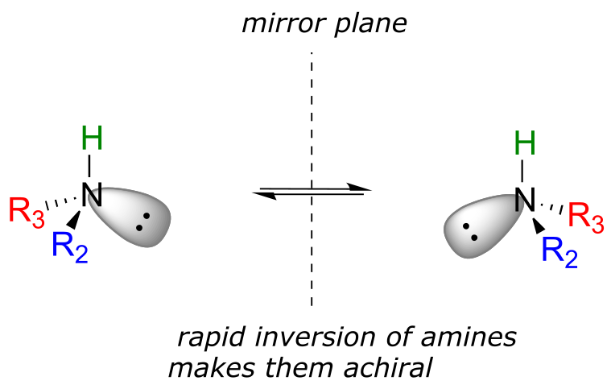
fig 42
If you have trouble picturing this, take an old tennis ball and cut it in half. Then, take one of the concave halves and flip it inside out, then back again: this is what the amine is doing. The end result is that the two ‘enantiomers’ if the amine are actually two rapidly interconverting forms of the same molecule, and thus the amine itself is not a chiral center. This inversion process does not take place on a tetrahedral carbon, which of course has no lone-pair electrons.
Exercise 3.8: Locate all of the chiral centers (there may be more than one in a molecule). Remember, hydrogen atoms bonded to carbon usually are not drawn in the line structure convention - but they are still there!

fig 41
Exercise 3.9:
a) Draw two enantiomers of i) mevalonate and ii) serine.
b) Are the two 2-butanol structures below enantiomers?

Exercise 3.10: Label the molecules below as chiral or achiral, and locate all chiral centers.
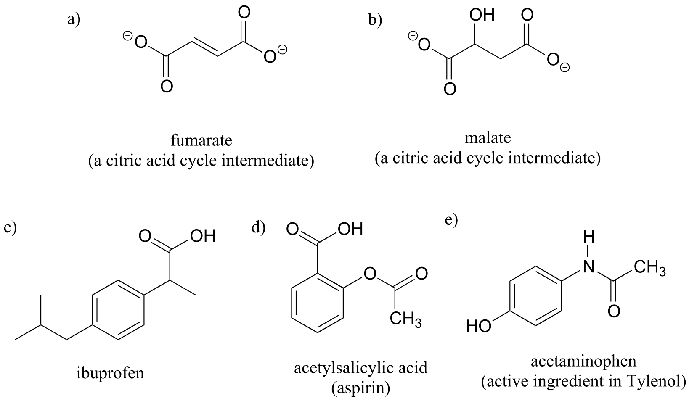
fig 43
Section 3.4: Labeling chiral centers#
Chemists need a convenient way to distinguish one stereoisomer from another. The Cahn-Ingold-Prelog system is a set of rules that allows us to unambiguously define the stereochemical configuration of any stereocenter, using the designations ‘R’ (from the Latin rectus, meaning right-handed) or ‘S’ (from the Latin sinister, meaning left-handed).
The rules for this system of stereochemical nomenclature are, on the surface, fairly simple.
Rules for assigning an R/S designation to a chiral center:
1: Assign priorities to the four substituents, with #1 being the highest priority and #4 the lowest. Priorities are based on the atomic number.
2: Trace a circle from #1 to #2 to #3.
3: Determine the orientation of the #4 priority group. If it is oriented into the plane of the page (away from you), go to step 4a. If it is oriented out of the plane of the page (toward you) go to step 4b.
4a: (#4 group pointing away from you): a clockwise circle in part 2 corresponds to the R configuration, while a counterclockwise circle corresponds to the S configuration.
4b: (#4 group pointing toward you): a clockwise circle in part 2 corresponds to the S configuration, while a counterclockwise circle corresponds to the R configuration.
We’ll use the 3-carbon sugar glyceraldehyde as our first example. The first thing that we must do is to assign a priority to each of the four substituents bound to the chiral center. We first look at the atoms that are directly bonded to the chiral center: these are H, O (in the hydroxyl), C (in the aldehyde), and C (in the CH2OH group).
Assigning R/S configuration to glyceraldehyde
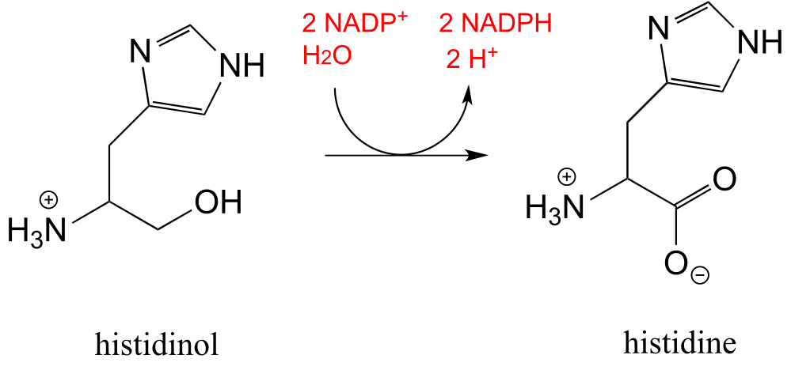
fig 44
Two priorities are easy: hydrogen, with an atomic number of 1, is the lowest (#4) priority, and the hydroxyl oxygen, with atomic number 8, is priority #1. Carbon has an atomic number of 6. Which of the two ‘C’ groups is priority #2, the aldehyde or the CH2OH? To determine this, we move one more bond away from the chiral center: for the aldehyde we have a double bond to an oxygen, while on the CH2OH group we have a single bond to an oxygen. If the atom is the same, double bonds have a higher priority than single bonds. Therefore, the aldehyde group is assigned #2 priority and the CH2OH group the #3 priority.
With our priorities assigned, we look next at the #4 priority group (the hydrogen) and see that it is pointed back away from us, into the plane of the page - thus step 4a from the procedure above applies. Then, we trace a circle defined by the #1, #2, and #3 priority groups, in increasing order. The circle is clockwise, which by step 4a tells us that this carbon has the ‘R’ configuration, and that this molecule is (R)-glyceraldehyde. Its enantiomer, by definition, must be (S)-glyceraldehyde.
Next, let’s look at one of the enantiomers of lactic acid and determine the configuration of the chiral center. Clearly, H is the #4 substituent and OH is #1. Owing to its three bonds to oxygen, the carbon on the acid group takes priority #2, and the methyl group takes #3. The #4 group, hydrogen, happens to be drawn pointing toward us (out of the plane of the page) in this figure, so we use step 4b: The circle traced from #1 to #2 to #3 is clockwise, which means that the chiral center has the S configuration.
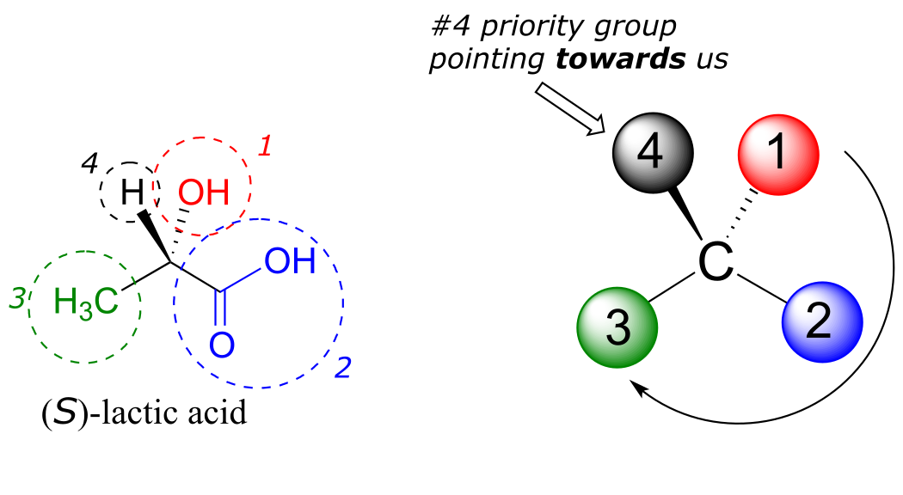
fig 45
Interactive model: (S)-alanine
Video tutorial: Cahn-Ingold-Prelog (R/S) naming system
The drug thalidomide is an interesting - but tragic - case study in the importance of stereochemistry in drug design. First manufactured by a German drug company and prescribed widely in Europe and Australia in the late 1950’s as a sedative and remedy for morning sickness in pregnant women, thalidomide was soon implicated as the cause of devastating birth defects in babies born to women who had taken it. Thalidomide contains a chiral center, and thus exists in two enantiomeric forms. It was marketed as a racemic mixture: in other words, a 50:50 mixture of both enantiomers.

fig 45b
Let’s try to determine the stereochemical configuration of the enantiomer on the left. Of the four bonds to the chiral center, the #4 priority is hydrogen. The nitrogen group is #1, the carbonyl side of the ring is #2, and the –CH2 side of the ring is #3.
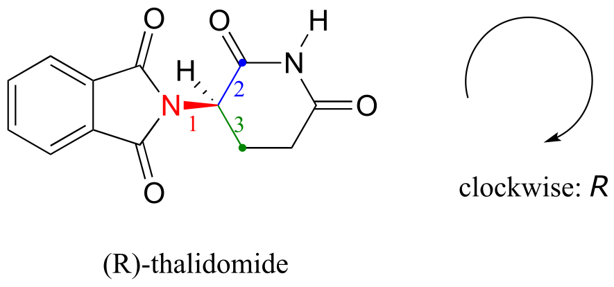
fig 45a
The hydrogen is shown pointing away from us, and the prioritized substituents trace a clockwise circle: this is the R enantiomer of thalidomide. The other enantiomer, of course, must have the S configuration.
Interactive model of (S)-thalidomide
Although scientists are still unsure today how thalidomide works, experimental evidence suggests that it was actually the R enantiomer that had the desired medical effects, while the S enantiomer caused the birth defects. Even with this knowledge, however, pure (R)-thalidomide is not safe, because enzymes in the body rapidly convert between the two enantiomers - we will see how that happens in chapter 12. (J. Pharmacokinet. Biopharm. 1998, 26, 363; Arch. Toxicol. 1988, 62, 205).
As a historical note, thalidomide was never approved for use in the United States. This was thanks in large part to the efforts of Dr. Frances Kelsey, a Food and Drug officer who, at peril to her career, blocked its approval due to her concerns about the lack of adequate safety studies, particularly with regard to the drug’s ability to enter the bloodstream of a developing fetus. Unfortunately, though, at that time clinical trials for new drugs involved widespread and unregulated distribution to doctors and their patients across the country, so families in the U.S. were not spared from the damage caused.
Very recently a close derivative of thalidomide has become legal to prescribe again in the United States, with strict safety measures enforced, for the treatment of a form of blood cancer called multiple myeloma. In Brazil, thalidomide is used in the treatment of leprosy - but despite safety measures, children are still being born with thalidomide-related defects.
Exercise 3.11: Determine the stereochemical configurations of the chiral centers in the biomolecules shown below.

Exercise 3.12: Should the (R) enantiomer of malate have a solid or dashed wedge for the C-O bond in the figure below?

fig 46
Exercise 3.13: Using solid or dashed wedges to show stereochemistry, draw the (R) enantiomer of ibuprofen and the (S) enantiomer of 2-methylerythritol-4-phosphate (structures are shown earlier in this chapter without stereochemistry).
Section 3.5: Optical activity#
Chiral molecules, as we learned in the introduction to this chapter, have an interesting optical property. You may know from studying physics that light waves are oscillating electric and magnetic fields. In ordinary light, the oscillation is randomly oriented in an infinite number of planes. When ordinary light is passed through a polarizer, all planes of oscillation are filtered out except one, resulting in plane-polarized light.
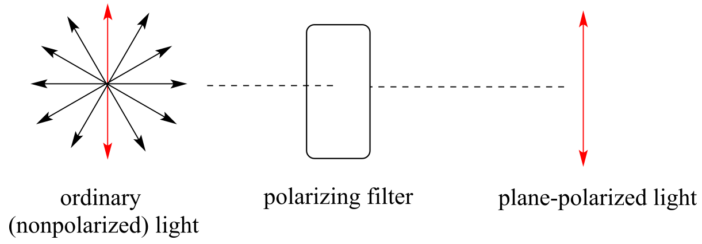
fig 47
A beam of plane-polarized light, when passed through a sample of a chiral compound, interacts with the compound in such a way that the angle of oscillation will rotate. This property is called optical activity.
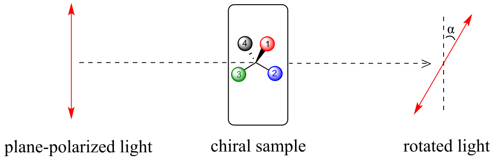
fig 48
If a compound rotates plane polarized light in the clockwise (+) direction, it is said to be dextrorotatory, while if it rotates light in the counterclockwise (-) direction it is levorotatory. (We mentioned L- and D-amino acids in the previous section: the L-amino acids are levorotatory). The magnitude of the observed optical activity is dependent on temperature, the wavelength of light used, solvent, concentration of the chiral sample, and the path length of the sample tube (path length is the length that the plane-polarized light travels through the chiral sample). Typically, optical activity measurements are made in a 1 decimeter (10 cm) path-length sample tube at 25 °C, using as a light source the so-called “D-line” from a sodium lamp, which has a wavelength of 589 nm. The specific rotation [α] of a pure chiral compound at 25° is expressed by the expression:
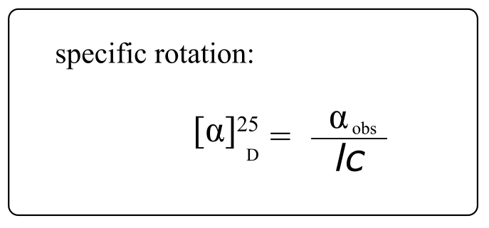
fig 49
… where αb is the observed rotation, l is path length in decimeters), and c is the concentration of the sample in grams per 100 mL. In other words, the specific rotation of a chiral compound is the optical rotation that is observed when 1g of the compound is dissolved in enough of a given solvent to make 100 mL solution, and the rotation is measured in a 1dm cuvette at 25 oC using light from a sodium lamp.
Every chiral molecule has a characteristic specific rotation, which is recorded in the chemical literature as a physical property just like melting point or density. Different enantiomers of a compound will always rotate plane-polarized light with an equal but opposite magnitude. (S)-ibuprofen, for example, has a specific rotation of +54.5o (dextrorotatory) in methanol, while (R)-ibuprofen has a specific rotation of -54.5o. There is no relationship between chiral compound’s R/S designation and the direction of its specific rotation. For example, the S enantiomer of ibuprofen is dextrorotatory, but the S enantiomer of glyceraldehyde is levorotatory.
A 50:50 mixture of two enantiomers (a racemic mixture) will have no observable optical activity, because the two optical activities cancel each other out. In a structural drawing, a ‘squigly’ bond from a chiral center indicates a mixture of both R and S configurations.
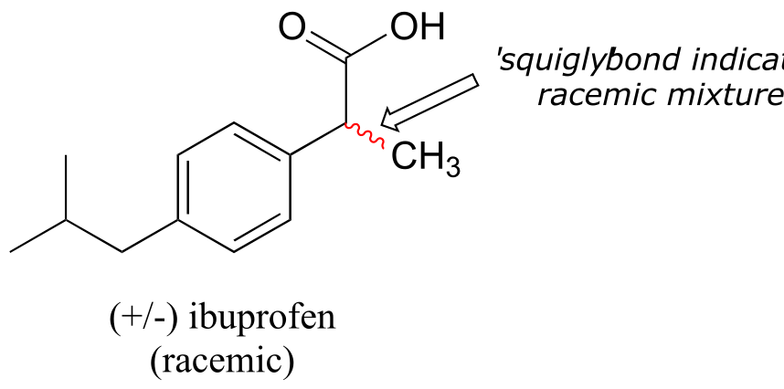
fig 50
Chiral molecules are often labeled according to whether they are dextrorotatory or levorotatory as well as by their R/S designation. For example, the pure enantiomers of ibuprofen are labeled (S)-(+)-ibuprofen and (R)-(-)-ibuprofen, while (±)-ibuprofen refers to the racemic mixture, which is the form in which the drug is sold to consumers.
Video tutorial: optical activity
Exercise 3.14: The specific rotation of (R)-limonene is +11.5o in ethanol. What is the expected observed rotation of a sample of 6.00 g (S)-limonene dissolved in ethanol to a total volume of 80.0 mL in a 1.00 dm (10.0 cm) pathlength cuvette?
Exercise 3.15: The specific rotation of (S)-carvone is +61°, measured ‘neat’ (pure liquid sample, no solvent). The optical rotation of a mixture of R and S carvone is measured at
-23°. Which enantiomer is in excess in the mixture?
All of the twenty natural amino acids except glycine have a chiral center at their α-carbon (recall that basic amino acid structure and terminology was introduced in section 1.3D). Virtually all of the amino acids found in nature, both in the form of free amino acids or incorporated into peptides and proteins, have what is referred to in the biochemical literature as the ‘L’ configuration:
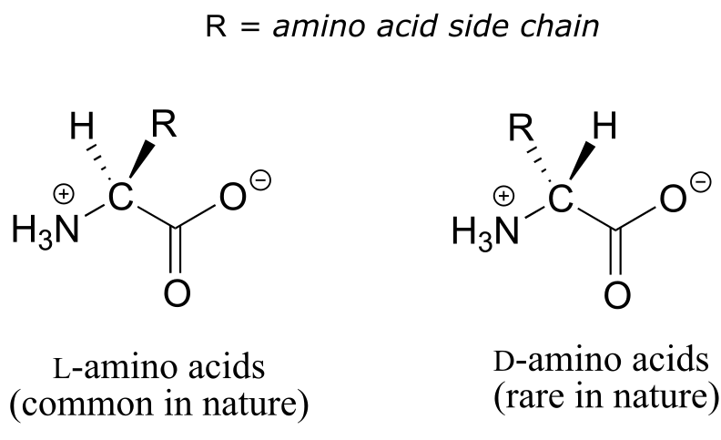
fig 45c
The ‘L’ indicates that these amino acid stereoisomers are levorotatory. All but one of the 19 L-amino acids have S stereochemistry at the α−carbon, using the rules of the R/S naming system.
Interactive model: (S)-alanine
D-amino acids (the D stands for dextrorotatory) are very rare in nature, but we will learn about an interesting example of a peptide containing one D-amino acid residue later in chapter 12.
Exercise 3.16: Which L-amino acid has the R configuration? Use Table 5 at the end of the book to refer to the structures of all 20 common amino acids.
Section 3.6: Compounds with multiple chiral centers#
So far, we have been analyzing compounds with a single chiral center. Next, we turn our attention to those which have multiple chiral centers. We’ll start with some stereoisomeric four-carbon sugars with two chiral centers.

fig 51
To avoid confusion, we will simply refer to the different stereoisomers by capital letters.
Look first at compound A, below. Both chiral centers in have the R configuration (you should confirm this for yourself!). The mirror image of Compound A is compound B, which has the S configuration at both chiral centers. If we were to pick up compound A, flip it over and put it next to compound B, we would see that they are not superimposable (again, confirm this for yourself with your models!). A and B are nonsuperimposable mirror images: in other words, enantiomers.

fig 51
Now, look at compound C, in which the configuration is S at chiral center 1 and R at chiral center 2. Compounds A and C are stereoisomers: they have the same molecular formula and the same bond connectivity, but a different arrangement of atoms in space (recall that this is the definition of the term ‘stereoisomer). However, they are not mirror images of each other (confirm this with your models!), and so they are not enantiomers. By definition, they are diastereomers of each other.
Notice that compounds C and B also have a diastereomeric relationship, by the same definition.
So, compounds A and B are a pair of enantiomers, and compound C is a diastereomer of both of them. Does compound C have its own enantiomer? Compound D is the mirror image of compound C, and the two are not superimposable. Therefore, C and D are a pair of enantiomers. Compound D is also a diastereomer of compounds A and B.
This can also seem very confusing at first, but there some simple shortcuts to analyzing stereoisomers:
Stereoisomer shortcuts
If all of the chiral centers are of opposite R/S configuration between two stereoisomers, they are enantiomers.
If at least one, but not all of the chiral centers are opposite between two stereoisomers, they are diastereomers.
(Note: these shortcuts to not take into account the possibility of additional stereoisomers due to alkene groups: we will come to that later)
Here’s another way of looking at the four stereoisomers, where one chiral center is associated with red and the other blue. Pairs of enantiomers are stacked together.

fig 51
The four possible configurations:
RR RS
SS SR
We know, using the shortcut above, that the enantiomer of RR must be SS - both chiral centers are different. We also know that RS and SR are diastereomers of RR, because in each case one - but not both - chiral centers are different.
Now, let’s extend our analysis to a sugar molecule with three chiral centers. Going through all the possible combinations, we come up with eight total stereoisomers - four pairs of enantiomers.

fig 52
RRR RRS RSR RSS
SSS SSR SRS SRR
Let’s draw the RRR stereoisomer. Being careful to draw the wedge bonds correctly so that they match the RRR configurations, we get:

fig 53a
Now, using the above drawing as our model, drawing any other stereoisomer is easy. If we want to draw the enantiomer of RRR, we don’t need to try to visualize the mirror image, we just start with the RRR structure and invert the configuration at every chiral center to get SSS.

fig 54
Try making models of RRR and SSS and confirm that they are in fact nonsuperimposable mirror images of each other.
There are six diastereomers of RRR. To draw one of them, we just invert the configuration of at least one, but not all three, of the chiral centers. Let’s invert the configuration at chiral center 1 and 2, but leave chiral center 3 unchanged. This gives us the SSR configuration.

fig 53
One more definition at this point: diastereomers which differ at only a single chiral center are called epimers. For example, RRR and SRR are epimers*:*
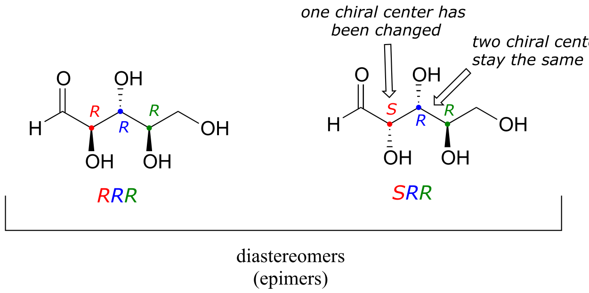
The RRR and SSR stereoisomers shown earlier are diastereomers but not epimers because they differ at two of the three chiral centers.
Exercise 3.17:
a) Draw the structure of the enantiomer of the SRS stereoisomer of the sugar used in the previous example.
b) List (using the XXX format, not drawing the structures) all of the epimers of SRS.
c) List all of the stereoisomers that are diastereomers, but not epimers, of SRS.
The epimer term is useful because in biochemical pathways, compounds with multiple chiral centers are isomerized at one specific center by enzymes known as epimerases. Two examples of epimerase-catalyzed reactions are below.

fig 55
We know that enantiomers have identical physical properties and equal but opposite magnitude specific rotation. Diastereomers, in theory at least, have different physical properties – we stipulate ‘in theory’ because sometimes the physical properties of two or more diastereomers are so similar that it is very difficult to distinguish between them. In addition, the specific rotation values of diastereomers are unrelated – they could be the same sign or opposite signs, similar in magnitude or very dissimilar.
Exercise 3.18: The sugar below is one of the stereoisomers that we have been discussing.

fig 55h
The only problem is, it is drawn with the carbon backbone in a different orientation from what we have seen. Determine the configuration at each chiral center to determine which stereoisomer it is.
Exercise 3.19: Draw the enantiomer of the xylulose-5-phosphate structure in the previous figure.
Exercise 3.20: The structure of the amino acid D-threonine, drawn without stereochemistry, is shown below. D-threonine has the (S) configuration at both of its chiral centers. Draw D-threonine, it’s enantiomer, and its two diastereomers.
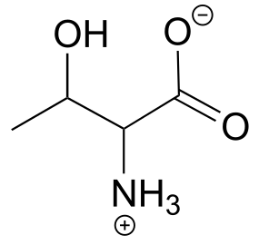
Here is some more practice in identifying isomeric relationships. D-glucose is the monosaccharide that serves as the entrance point for the glycolysis pathway and as a building block for the carbohydrate biopolymers starch and cellulose. The ‘D’ in D-glucose stands for dextrarotatory and is part of the specialized nomenclature system for sugars, which we will not concern ourselves with here. The open-chain structure of the sugar is shown below.

fig 55f
Because D-glucose has four chiral centers, it can exist in a total of 24 = 16 different stereoisomeric forms: it has one enantiomer and 14 diastereomers.
Now, let’s compare the structures of the two sugars D-glucose and D-gulose, and try to determine their relationship.
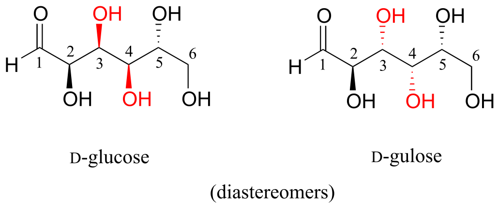
fig 55a
The two structures have the same molecular formula and the same connectivity, therefore they must be stereoisomers. They each have four chiral centers, and the configuration is different at two of these centers (at carbons #3 and #4). They are diastereomers.
Now, look at the structures of D-glucose and D-mannose.
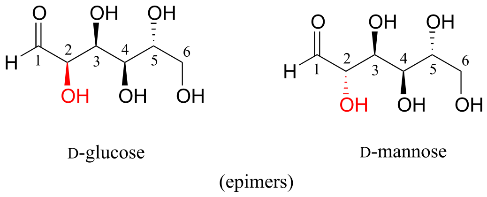
fig 55b
Here, everything is the same except for the configuration of the chiral center at carbon #2. The two sugars differ at only one of the four chiral centers, so again they are diastereomers, and more specifically they are epimers.
D-glucose and L-glucose are enantiomers, because they differ at all four chiral centers.

fig 55c
D-glucose is the enantiomer commonly found in nature.
D-glucose and D-fructose are not stereoisomers, because they have different bonding connectivity: glucose has an aldehyde group, while fructose has a ketone. The two sugars do, however, have the same molecular formula, so by definition they are constitutional isomers.
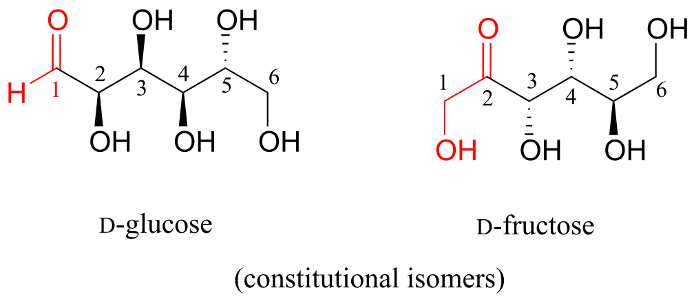
D-glucose and D-ribose are not isomers of any kind, because they have different molecular formulas.
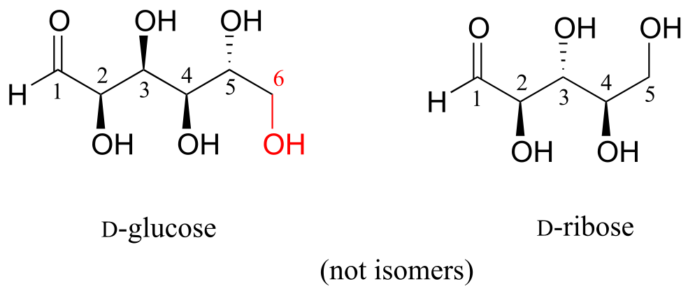Exercise 3.21: Identify the relationship between each pair of structures. Your choices are: not isomers, constitutional isomers, diastereomers but not epimers, epimers, enantiomers, or same molecule.

fig 55g
Exercise 3.22: Identify the relationship between each pair of structures. Hint - figure out the configuration of each chiral center.

fig 55h
Section 3.7: Meso compounds#
The levorotatory and dextrorotatory forms of tartaric acid studied by Louis Pasteur were, as we now know, the (S,S) and (R,R) enantiomers, respectively:
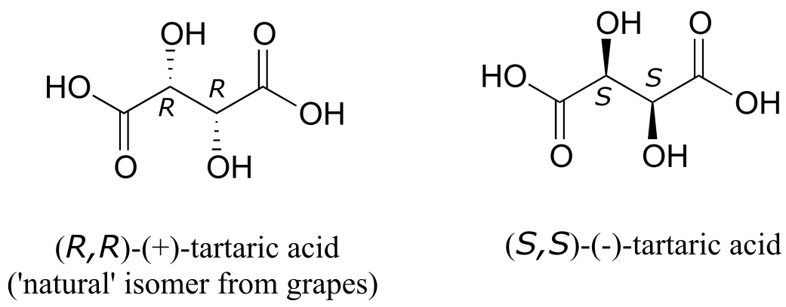
fig 56a
What the 19th century chemists referred to as ‘acide racemique’ was just that: a racemic mixture of the R,R and S,S enantiomers, the racemization a result of how the natural R,R isomer had been processed.
But tartaric acid has two chiral centers: shouldn’t there be another pair of enantiomers?
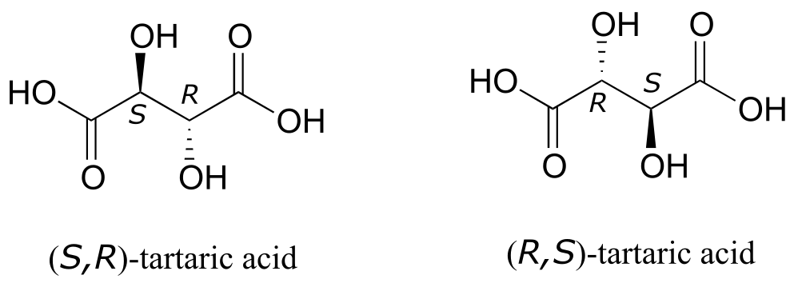fig 56c
There in fact is another stereoisomer of tartaric acid: but only one. The two structures above are actually superimposable on one another: they are the exact same molecule. The figure below illustrates this, and also that the structure has a plane of symmetry. However, you should be sure to build models and confirm these assertions for yourself.
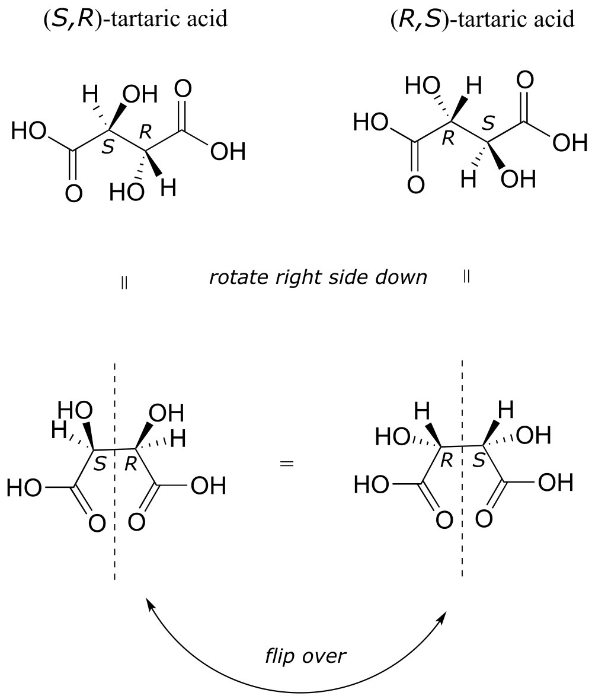
fig 56d
This tartaric acid isomer is an achiral diastereomer of the both the levorotatory and dextrorotatory isomers. It is a special case, called a meso compound: it has two apparent chiral centers but due to its internal symmetry it is not in fact chiral, and does not exhibit optical activity. Note that the meso form of tartaric acid did not play a part in Pasteur’s experiments.
There are many more possible examples of meso compounds, but they really can be considered ‘exceptions to the rule’ and quite rare in biologically relevant chemistry.
Exercise 3.23: Which of the following compounds are meso? Hint: build models, and then try to find a conformation in which you can see a plane of symmetry.
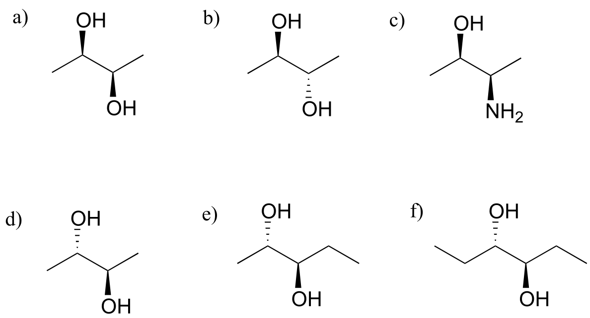
Section 3.8: Fischer and Haworth projections#
When reading the chemical and biochemical literature, you are likely to encounter several different conventions for drawing molecules in three dimensions, depending on the context of the discussion. While organic chemists prefer to use the dashed/solid wedge convention to show stereochemistry, biochemists often use drawings called Fischer projections and Haworth projections to discuss and compare the structure of sugar molecules.
Fisher projections show sugars in their open chain form. In a Fischer projection, the carbon atoms of a sugar molecule are connected vertically by solid lines, while carbon-oxygen and carbon-hydrogen bonds are shown horizontally. Stereochemical information is conveyed by a simple rule: vertical bonds point into the plane of the page, while horizontal bonds point out of the page.

fig 66
Below are two different representations of (R)-glyceraldehyde, the smallest sugar molecule (also called D-glyceraldehyde in the stereochemical nomenclature used for sugars):

fig 67
Below are three representations of the open chain form of D-glucose: in the conventional Fischer projection (A), in the “line structure” variation of the Fischer projection in which carbons and hydrogens are not shown (B), and finally in the ‘zigzag’ style (C) that is preferred by organic chemists.

fig 68
Care must be taken when ‘translating’ Fischer projection structures into’ zigzag’ format
– it is easy to get the stereochemistry wrong. Probably the best way to make a translation is to simply assign R/S configurations to each stereocenter, and proceed from there. When deciding whether a stereocenter in a Fischer projection is R or S, realize that the hydrogen, in a horizontal bond, is pointing towards you – therefore, a counterclockwise circle means R, and a clockwise circle means S (the opposite of when the hydrogen is pointing away from you).

fig 69
Fischer projections are useful when looking at many different diastereomeric sugar structures, because the eye can quickly pick out stereochemical differences according to whether a hydroxyl group is on the left or right side of the structure.
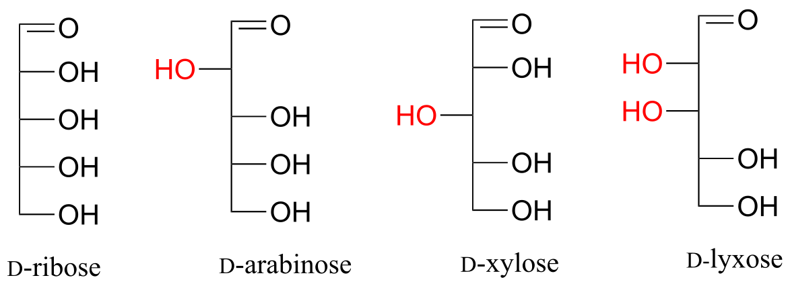
fig 70
Video tutorial: Fischer projections
Exercise 3.24: Draw ‘zigzag’ structures (using the solid/dash wedge convention to show stereochemistry) for the four sugars in the figure above. Label all stereocenters R or S. To make it easy to check your answers, draw your structures using the framework below.

While Fischer projections are used for sugars in their open-chain form, Haworth projections are often used to depict sugars in their cyclic forms. The β diastereomer of the cyclic form of glucose is shown below in three different depictions, with the Haworth projection in the middle.

fig 71
Notice that although a Haworth projection is a convenient way to show stereochemistry, it does not provide a realistic depiction of conformation. To show both conformation and stereochemistry, you must draw the ring in the chair form, as in structure C above.
Section 3.9: Stereochemistry of alkenes#
When we talk about stereochemistry, we are not always talking about chiral compounds and chiral centers. Consider cis- and trans-2-butene:

fig 57
Each can be superimposed on its own mirror image, and neither is chiral (also, note the lack of a chiral center!) However, they both have the same molecular formula and the same bonding connectivity, so by definition they are stereoisomers of each other. Because they are not mirror images, they must be diastereomers. An alkene group which can exist in two stereoisomeric forms is referred to as stereogenic.
Alkene groups in natural unsaturated fatty acids are normally cis, but trans-fatty acids (which are thought to be associated with heart disease and other health problems) are found in some food products.

fig 58
Retinal is a light-sensitive molecule, derived from vitamin A, that is found in the rod cells of the eye. When light enters the eye through the retina, one form of retinal is converted to a diastereomer when a cis double bond is converted to trans (we’’ll learn how this happens in chapter x). This changes the shape of the molecule and the way that it binds to the vision protein rhodopsin, which in turn initiates a chain of events that leads to a signal being sent to the vision center of the brain.

fig 59
While the terms cis and trans are quite clear in the examples above, in some cases they can be ambiguous, and a more rigorous stereochemical designation is required. To unambiguously designate alkene stereochemistry, it is best to use the designators ‘E’ and ‘Z’ rather than trans and cis. To use this naming system, we first decide which is the higher priority group on each carbon of the double bond, using the same priority rules that we learned for the R/S system. If the higher-priority groups are one the same side of the double bond, it is a Z-alkene, and if they are on the opposite side it is an E-alkene. A memory device that many students find helpful is the phrase ‘Z = zame zide’.
Shown below is an example of an E-alkene: notice that, although the two methyl groups are on the same side relative to one another, the alkene has E stereochemistry according to the rules of the E/Z system because one of the methyl groups takes a higher priority (relative to a hydrogen) and the other takes lower priority (relative to a primary alcohol). The cis/trans terms would be ambiguous for this compound.
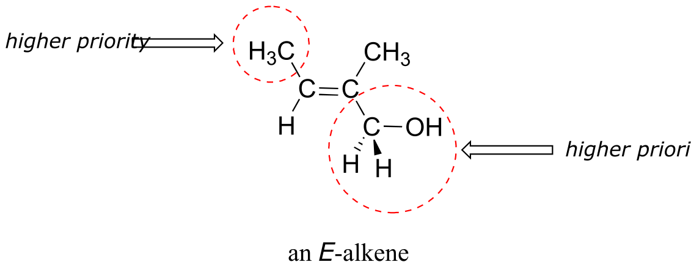fig 14
fig 60
Not all alkenes can be labeled E or Z: if one (or both) of the double-bonded carbons has identical substituents, the alkene is not stereogenic, and thus cannot be assigned an E or Z configuration. Terminal alkenes, in which one of the alkene carbons is bonded to two hydrogen atoms, are the most commonly seen type of nonstereogenic alkene.
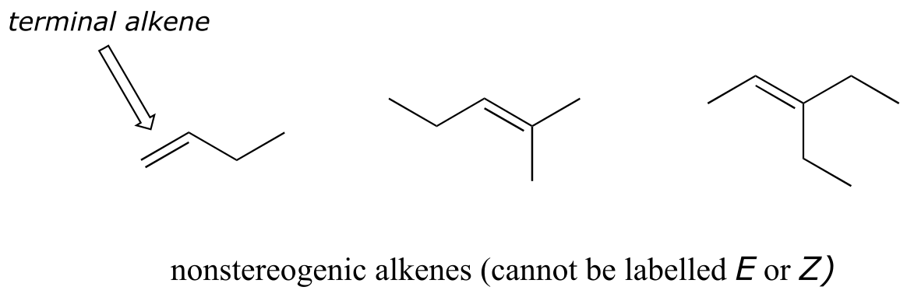
fig 60a
Video tutorial: the E/Z naming for alkenes
Natural rubber is a polymer composed of five-carbon isoprenoid building blocks (see section 1.3A) linked with Z stereochemistry. The same isoprenpoid building blocks can also be connected with E stereochemistry, leading to a polymer that is a precursor to cholesterol and many other natural isoprenoid compounds found in all forms of life.

fig 61
Alkenes located inside a five- or six-membered ring, such as in cyclohexene, are not generally labeled E or Z, simply because the closed geometry of the ring allows for only one stereochemical possibility. (E)-cyclohexene is not physically possible, so it is not necessary to include the (Z) designator for cyclohexene. Larger rings, however, can hypothetically have E or Z alkene groups: two actual examples are included in exercise 3.26 below.
As a general rule, alkenes with the bulkiest groups on opposite sides of the double bond are more stable, due to reduced steric strain. The trans (E) diastereomer of 2-butene, for example, is slightly lower in energy than the cis (Z) diastereomer, as seen by their relative heats of hydrogenation to butane (see section 2.2B for a reminder of the meaning of ‘heat of hydrogenation’.)
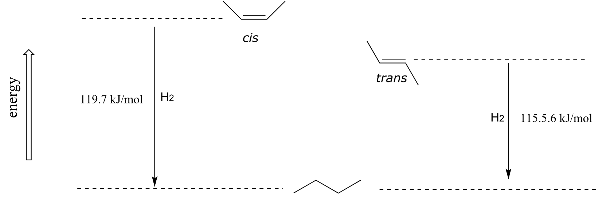
Exercise 3.25: Label the alkene groups below as E, Z, or N (for a nonstereogenic alkene).

Exercise 3.26: The compounds shown below were all isolated from natural sources and their structures reported in a 2007 issue of the Journal of Natural Products, an American Chemical Society publication. Label all alkene groups that are not inside 5- or 6-membered rings as E, Z, or N (for a nonstereogenic alkene).
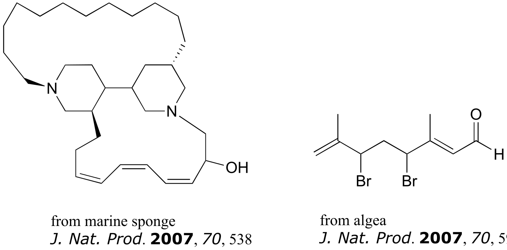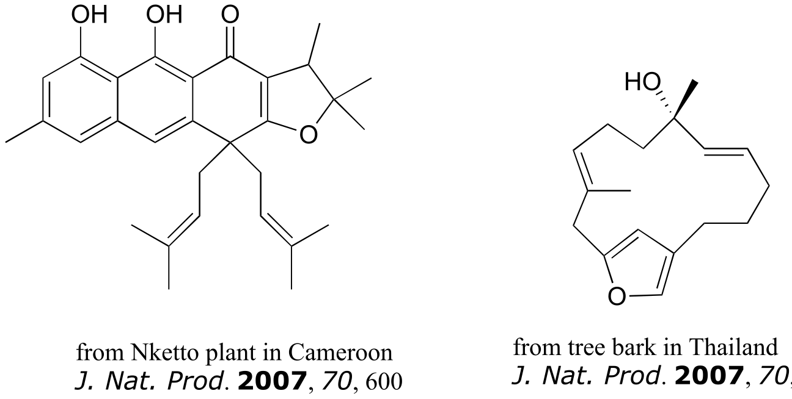
How do we know how many stereoisomers are possible for a given structure? There is actually a straightforward way to figure this out. All we need to do is count the number of chiral centers and stereogenic alkene groups, the use this following rule:
number of stereoisomeric forms = 2*n*
… where n = the number of chiral centers plus the number of stereogenic alkene groups
(the rare exception to this rule is when a meso form is possible - in this case, the rule becomes 2n-1)
Consider for example a molecule with two chiral centers and one stereogenic alkene. By the rule stated above, we know right away that there must be eight possible stereoisomers. Drawing out all the possibilities, we see:

fig 61b
We see that, for example, RRE has one enantiomer, the SSE compound. The six other stereoisomers are all diastereomers of RRE.
It needs to be stressed that the enantiomer of the RRE compound is the SSE compound, not the SSZ compound. Remember, the E/Z relationship is diastereomeric, not enantiomeric. Use models to convince yourself that the RRE and the SSE isomers are mirror images of each other, while RRE and SSZ compounds are not. In general, to get the enantiomer of a compound, we invert all chiral centers but leave all stereogenic alkenes the same.
Exercise 3.27: Draw the enantiomer of each the compounds below, and assign configurations to all chiral centers and stereogenic alkenes. How many diastereomers are possible for each of the structures you drew?

fig 61c
Section 3.10: Stereochemistry in biology and medicine#
While challenging to understand and visualize, the stereochemistry concepts we have explored in this chapter are integral to the study of living things. The vast majority of biological molecules contain chiral centers and/or stereogenic alkene groups. Most importantly, proteins are chiral, which of course includes all of the enzymes which catalyze the chemical reactions of a cell, the receptors which transmit information within or between cells, and the antibodies which bind specifically to potentially harmful invaders. You know from your biology classes that proteins, because they fold up into a specific three dimensional shape, are able to very specifically recognize and bind to other organic molecules. The ligand or substrate bound by a particular protein could be a small organic molecule such as pyruvate all the way up to a large biopolymer such as a specific region of DNA, RNA, or another protein. Because they are chiral molecules, proteins are very sensitive to the stereochemistry of their ligands: a protein may bind specifically to (R)-glyceraldehyde, for example, but not bind to (S)-glyceraldehyde, just as your right hand will not fit into a left-handed baseball glove.
The over-the-counter painkiller ibuprofen is currently sold as a racemic mixture, but only the S enantiomer is effective, due to the specific way it is able to bind to and inhibit the action of prostaglandin H2 synthase, an enzyme in the body’s inflammation response process.

fig 62
The R enantiomer of ibuprofen does not bind to prostaglandin H2 synthase in the same way as the S enantiomer, and as a consequence does not exert the same inhibitory effect on the enzyme’s action (Nature Chemical Biology 2011, 7, 803). Fortunately, (R)-ibuprofen apparently does not cause any harmful side effects, and is in fact isomerized gradually by an enzyme in the body to (S)-ibuprofen.
Earlier in this chapter we discussed the tragic case of thalidomide, and mentioned that it appears that it is specifically the S enantiomer which caused birth defects. Many different proposals have been made over the past decades to try to explain the teratogenic (birth defect-causing) effect of the drug, but a clear understanding still evades the scientific community. In 2010, however, a team in Japan reported evidence that thalidomide binds specifically to a protein called ‘thereblon’. Furthermore, when production of thereblon is blocked in female zebra fish, developmental defects occur in her offspring which are very similar to the defects caused by the administration of thalidomide, pointing to the likelihood that thalidomide binding somehow inactivates the protein, thus initiating the teratogenic effect.
You can, with a quick trip to the grocery store, directly experience the biological importance of stereoisomerism. Carvone is a chiral, plant-derived molecule that contributes to the smell of spearmint in the R form and caraway (a spice) in the S form.
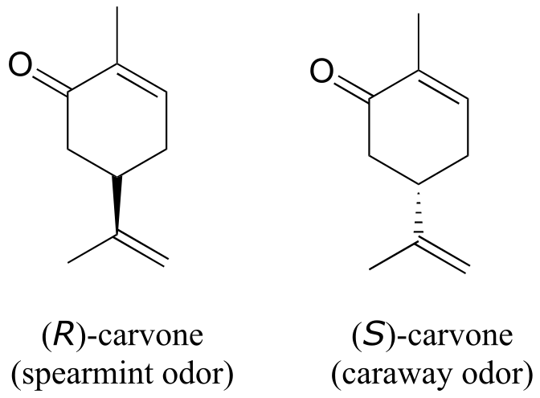
fig 63
Although details are not known, the two enantiomers presumably interact differently with one or more smell receptor proteins in your nose, generating the transmission of different chemical signals to the olfactory center of your brain.
Exercise 3.28: Ephedrine, found in the Chinese traditional medicine ma huang, is a stimulant and appetite suppressant. Both pseudoephedrine and levomethamphetamine are active ingredients in over-the-counter nasal decongestants. Methamphetamine is a highly addictive and illegal stimulant, and is usually prepared in illicit ‘meth labs’ using pseudoephedrine as a starting point.

What is the relationship between ephedrine and pseudoephedrine? Between methamphetamine and levomethamphetamine? Between pseudoephedrine and methamphetamine? Your choices are: not isomers, constitutional isomers, diastereomers, enantiomers, or same molecule.
Enzymes are very specific with regard to the stereochemistry of the reactions they catalyze. When the product of a biochemical reaction contains a chiral center or a stereogenic alkene, with very few exceptions only one stereoisomer of the product is formed. In the glycolysis pathway, for example, the enzyme triose-phosphate isomerase catalyzes the reversible interconversion between dihydroxyacetone (which is achiral) and (R)-glyceraldehyde phosphate. The (S)-glyceraldehyde enantiomer is not formed by this enzyme in the left-to-right reaction, and is not used as a starting compound in the right-to-left reaction - it does not ‘fit’ in the active site of the enzyme.

fig 64
In the isoprenoid biosynthesis pathway, two five-carbon building-block molecules combine to form a ten-carbon chain containing an E-alkene group. The enzyme does not catalyze formation of the Z diastereomer.
fig 65
In chapters 9-17 of this book, and continuing on into your study of biological and organic chemistry, you will be learning about how enzymes are able to achieve these feats of stereochemical specificity. If you take a more advanced class in organic synthesis, you will also learn how laboratory chemists are figuring out ingenious ways to exert control over the stereochemical outcomes of nonenzymatic reactions, an area of chemistry that is particularly important in the pharmaceutical industry.
Section 3.11: Prochirality#
3.11A: Prochiral carbons#
When a tetrahedral carbon can be converted to a chiral center by changing only one of the attached groups, it is referred to as a ‘prochiral’ carbon. The two hydrogens on the prochiral carbon can be described as ‘prochiral hydrogens’.

fig 72
Note that if, in a ‘thought experiment’, we were to change either one of the prochiral hydrogens on a prochiral carbon center to a deuterium (the 2H isotope of hydrogen), the carbon would now have four different substituents and thus would be a chiral center.
Prochirality is an important concept in biological chemistry, because enzymes can distinguish between the two ‘identical’ groups bound to a prochiral carbon center due to the fact that they occupy different regions in three-dimensional space. Consider the isomerization reaction below, which is part of the biosynthesis of isoprenoid compounds. We do not need to understand the reaction itself (it will be covered in chapter 14); all we need to recognize at this point is that the isomerase enzyme is able to distinguish between the prochiral ‘red’ and the ‘blue’ hydrogens on the isopentenyl diphosphate (IPP) substrate. In the course of the left to right reaction, IPP specifically loses the ‘red’ hydrogen and keeps the ‘blue’ one.
fig 73
Prochiral hydrogens can be unambiguously designated using a variation on the R/S system for labeling chiral centers. For the sake of clarity, we’ll look at a very simple molecule, ethanol, to explain this system. To name the ‘red’ and ‘blue’ prochiral hydrogens on ethanol, we need to engage in a thought experiment. If we, in our imagination, were to arbitrarily change red H to a deuterium, the molecule would now be chiral and the chiral carbon would have the R configuration (D has a higher priority than H).
fig 74
For this reason, we can refer to the red H as the pro-R hydrogen of ethanol, and label it H*R. Conversely, if we change the blue H to D and leave red H as a hydrogen, the configuration of the molecule would be S, so we can refer to blue H as the pro-S hydrogen of ethanol, and label it HS*.

fig 75
Looking back at our isoprenoid biosynthesis example, we see that it is specifically the pro-R hydrogen that the isopentenyl diphosphate substrate loses in the reaction.
fig 76
Prochiral hydrogens can be designated either enantiotopic or diastereotopic. If either HR or HS on ethanol were replaced by a deuterium, the two resulting isomers would be enantiomers (because there are no other stereocenters anywhere on the molecule)
fig 77
Thus, these two hydrogens are referred to as enantiotopic.
In (R)-glyceraldehyde-3-phosphate ((R)-GAP), however, we see something different:
fig 78
(R)-GAP already has one chiral center. If either of the prochiral hydrogens HR or HS is replaced by a deuterium, a second chiral center is created, and the two resulting molecules will be diastereomers (one is S,R, one is R,R). Thus, in this molecule, HR and HS are referred to as diastereotopic hydrogens.
Finally, hydrogens that can be designated neither enantiotopic nor diastereotopic are called homotopic. If a homotopic hydrogen is replaced by deuterium, a chiral center is not created. The three hydrogen atoms on the methyl (CH3) group of ethanol (and on any methyl group) are homotopic.

fig 79
An enzyme cannot distinguish among homotopic hydrogens.
Exercise 3.29: Identify in the molecules below all pairs/groups of hydrogens that are homotopic, enantiotopic, or diastereotopic. When appropriate, label prochiral hydrogens as H*R* or H*S*.

fig 79a
Groups other than hydrogens can be considered prochiral. The alcohol below has two prochiral methyl groups - the red one is pro-R, the blue is pro-S. How do we make these designations? Simple - just arbitrarily assign the red methyl a higher priority than the blue, and the compound now has the R configuration - therefore red methyl is pro-R.

fig 80
Citrate is another example. The central carbon is a prochiral center with two ‘arms’ that are identical except that one can be designated pro-R and the other pro-S.

fig 81
In an isomerization reaction of the citric acid (Krebs) cycle, a hydroxide is shifted specifically to the pro-R arm of citrate to form isocitrate: again, the enzyme catalyzing the reaction distinguishes between the two prochiral arms of the substrate (we will study this reaction in chapter 13).

fig 82
Exercise 3.30: Assign pro-R and pro-S designations to all prochiral groups in the amino acid leucine. (Hint: there are two pairs of prochiral groups!). Are these prochiral groups diastereotopic or enantiotopic?

{kind=link}
{kind=link}
fig 82a
Although an alkene carbon bonded to two identical groups is not considered a prochiral center, these two groups can be diastereotopic. Ha and Hb on the alkene below, for example, are diastereotopic: if we change one, and then the other, of these hydrogens to deuterium, the resulting compounds are E and Z diastereomers.

fig 83
3.11B: Prochiral carbonyl and imine groups#
Trigonal planar, sp2-hybridized carbons are not, as we well know, chiral centers– but they can be prochiral centers if they are bonded to three different substitutuents. We (and the enzymes that catalyze reactions for which they are substrates) can distinguish between the two planar ‘faces’ of a prochiral sp2 - hybridized group. These faces are designated by the terms re and si. To determine which is the re and which is the si face of a planar organic group, we simply use the same priority rankings that we are familiar with from the R/S system, and trace a circle: re is clockwise and si is counterclockwise.

fig 84
Below, for example, we are looking down on the re face of the ketone group in pyruvate:

fig 85
If we flipped the molecule over, we would be looking at the si face of the ketone group. Note that the carboxylate group does not have re and si faces, because two of the three substituents on that carbon are identical (when the two resonance forms of carboxylate are taken into account).
As we will see in chapter 10, enzymes which catalyze reactions at carbonyl carbons act specifically from one side or the other.

fig 86
We need not worry about understanding the details of the reaction pictured above at this point, other than to notice the stereochemistry involved. The pro-R hydrogen (along with the two electrons in the C-H bond) is transferred to the si face of the ketone (in green), forming, in this particular example, an alcohol with the R configuration. If the transfer had taken place at the re face of the ketone, the result would have been an alcohol with the S configuration.
The re and si designations can also be applied to planar, sp2-hybridized carbons in alkene groups. Keep in mind that a carbon-carbon double bond has a higher priority than a carbon-carbon single bond, but a lower priority than a carbon-oxygen bond.

Exercise 3.31: Assign a designation of re, si, or N (not prochiral) to indicate which face we are looking down on for each of the sp2-hybridized carbons in the structure below.

fig 86a
Summary of Key Concepts#
Before you move on to the next chapter, you should be confortable with the following concepts:
Conformations of open-chain compounds:
Be able to distinguish between eclipsed, staggered, gauche, and anti conformations, and the rational for trends in stability.
Be able to draw and interpret Newman projections.
Conformations of cyclic compounds:
Understand the concept of angle strain in 3- and 4-membered rings.
Be able to draw the envelope conformation of five-membered rings
Be able to draw the chair and boat conformations of six-membered rings.
In the chair conformation, be able to draw equatorial and axial substituents. Understand that large groups in the axial position experience considerable 1**,3-diaxial repulsion**, and thus are more stable in the equatorial position.
Stereochemistry:
Hierarchy of isomeric relationships:

You should understand the relevant terms and concepts:
A chiral object or molecule is cannot be superimposed on its mirror image.
A chiral center is an sp3-hybridized (tetrahedral) carbon bonded to four different groups. A chiral center can be labeled R or S.
A stereogenic alkene is an alkene is one in which both sides of the alkene are asymmetric, and which can therefore be labeled E or Z.
Stereoisomers have the same molecular formula and same connectivity, but a different orientation of atoms in space.
Enantiomers are stereoisomers which are mirror images.
In practice, the enantiomer of a compound is the one in which all chiral centers are in the opposite configuration.
Every chiral molecule has one and only one enantiomer.
Achiral molecules are superimposable on their mirror image, and thus cannot have an enantiomer.
Enantiomers have equal but opposite specific rotations, but identical physical properties otherwise.
Diastereomers are stereoisomers which are not mirror images. They have different physical properties.
In practice, a diastereomer of a chiral molecule with have at least one, but not all chiral centers in the opposite configuration.
Alternatively, two diastereomers may contain a stereogenic alkene with the opposite E/Z configuration.
A molecule has 2n-2 diastereomers, where n is the number of chiral centers plus stereogenic alkene groups. Meso compounds are an exception to this rule.
Epimers are diastereomers which differ at only one chiral center.
A racemic mixture is a 50:50 mixture of two enantiomers.
A meso compound has multiple chiral centers but, because it has a plane of symmetry, is achiral.
You should know how to assign R/S and E/Z configuration to chiral centers and stereogenic alkenes, respectively.
You should understand the concept of optical rotation and the definition of specific rotation.
You should recognize that in general, a protein can distinguish between its natural ligand and a stereoisomer of that ligand.
You should also recognize that enzymes are highly specific with respect to stereochemistry, catalyzing the formation of only one stereoisomer of their products.
You should be able to recognize and label pro-R and pro-S groups on prochiral tetrahetral carbons.
You should be able to recognize re and si faces of carbonyl and imine groups
Problems#
P3.1: Draw an energy vs dihedral angle graph for rotations about the C2-C3 bond of 2-methylbutane. Start with the highest-energy conformation as the 0o point. For each energy peak and valley, draw a corresponding Newman projection.
P3.2:
a) Which has the highest energy diaxial chair conformation: trans-1,2-dimethylcyclohexane, cis-1,3-dimethylcyclohexane, or trans-1,4-dimethylcyclohexane? Explain.
b) Which of the following are trans disubstituted cyclohexanes?

c) Draw A-F above in two dimensions (rings in the plane of the page, substituents drawn as solid or dashed wedges).
d) Structure D does not have any chiral centers. Explain.
e) Draw a diastereomer of structure D (in two dimensions, as in part c).
f) Are structure D and its diastereomer chiral?
g) Assign R/S designations to the two chiral centers in structure B (hint: making a model will be very helpful!)
P 3.3: The following are structures, drawn in two dimensions, of drugs listed on the products web page of Merck Pharmaceutical. One of the compounds is achiral.
a) Circle all chiral centers. (Hint: Don’t panic! Remember - you are looking for sp3-hybridized carbons with four different substituents.)

b) How many diastereomers are possible for desogestrel?
c) Draw two epimeric forms of simvastatin
P3.4: Three of the four structures below are chiral. Assign R/S designations to all chiral centers, and identify the achiral molecule.
P3.5: Draw the R,R stereoisomers of the structures below.

P3.6: Below are the structures of sucralose, the artificial sweetener with the brand name Splenda (TM), and the cancer drug Paclitaxel. Give an R or S designation to chiral centers indicated with an arrow.

P3.7: The four drugs below were featured in a Chemical & Engineering News article (April 16, 2007, p. 42) on new drugs that had been developed in university labs.
a) Identify each as chiral or achiral, and identify all chiral centers (in most cases, specific stereochemistry is not shown in the structures below). Also, state how many possible stereoisomers exist for each structure.
b) Visualization challenge: two fluorinated derivatives of Epivir were also mentioned in the article. The structures are below, drawn in what is referred to as a ‘Haworth projection’. What is the relationship between them? (Your choices: not isomers, constitutional isomers, diastereomers but not epimers, epimers, enantiomers, identical)
**
P3.8**: Redraw the following structures in the flat ring, solid/dash
wedge convention (the drawings have been started for you).

P3.9: Below is an experimental drug for Alzheimer’s disease that was mentioned in the March 13, 2007 issue of Chemical and Engineering News.
a) Label the chiral center(s) R or S.
b) Draw the enantiomer of the molecule shown.

P3.10: The molecules below are potential new drugs for the treatment of Duchenne muscular dystrophy (molecule A) and skin cancer (molecule B) (Chemical and Engineering News Sept 26, 2005, p. 39). Given the R/S designations, redraw the structure showing the correct stereochemistry.

P3.11: Draw the structure of the following molecules:
a) (R)-3-methyl-3-hexanol
b) (R)-1-chloro-1-phenylethane
c) (2R, 3R)-2,3-dihydroxybutanedioic acid (tartaric acid)
d) (S)-(E)-4-chloro-3-ethyl-2-pentenoic acid
e) (1S, 3R)-1-chloro-3-ethylcyclohexane
P3.12: Coelichelin (the structure below to the left) is a natural product from soil bacteria that was identified using a technique known as ‘genome mining’ (Chemical and Engineering News Sept. 19, 2005, p. 11). What is the relationship between coelichelin and the compound shown to the right? (Note: the two structures are drawn with the same conformation of the carbon backbone - just trace them through from end to end and identify where they are different!)
P3.13: Identify the relationships between the following pairs of structures (Not isomers, constitutional isomers, diastereomers but not epimers, epimers, enantiomers, identical)

P3.14: Identify the relationships between each of the following pairs of pentose sugars (not isomers, constitutional isomers, diastereomers but not epimers, epimers, enantiomers, identical).

P3.15: Identify the relationships between each of the following pairs of hexose sugars (not isomers, constitutional isomers, diastereomers but not epimers, epimers, enantiomers, identical).

P3.16: The compound drawn below (not showing stereochemistry) has been identified as a potential anti-inflammatory agent by scientists at Schering-Plough a pharmaceutical company (see Chemical and Engineering News Nov. 28, 2005 p. 29). How many stereoisomers are possible for the compound?
P3.17: Secramine is a synthetic compound that has been shown to interfere with the transport of newly synthesized proteins in the cell (see Chemical and Engineering News Nov. 28, 2005, p. 27). Also drawn below is a (hypothetical) isomer of secramine.
a) Identify the relationship between the two isomers: are they consitutional isomers, confomational isomers, enantiomers, or diastereomers?
b) Locate a five-membered ring in the secramine structure.

P3.18: The natural product bistramide A has been shown to bind to actin, an important structural protein in the cell, and suppress cell proliferation (see Chemical and Engineering News Nov. 21, 2005, p. 10).

a) Label the alkene functional groups as E, Z, or N (no E/Z designation possible)
b) Theoretically, how many diastereomers are possible for bistramide A?
P3.19:
a) Draw Newman projections of the gauche and the anti conformations of 1,2-ethanediol.
b) Why might the gauche conformation be expected to be the more stable of the two?
c) Do you think that gauche is also the most stable conformation of 1,2-dimethoxyethane? Explain.
P3.20: Draw the chair conformation of cis-1,2-dimethylcyclohexane.
a) Label the stereochemical configuration at C1 and C2 for the structure you drew.
b) Build a model of your molecule, and try out different possible boat conformations. Can you find one in which there is a plane of symmetry?
c) Is cis-1,2-dimethylcyclohexane a chiral molecule?
d) is cis -1,4-dimethylcyclohexane chiral? How about trans-1,4-dimethylcyclohexane? How about trans-1-chloro-4-fluorocyclohexane?
P3.21: In some special cases, a ‘chiral center’ can be composed of several atoms instead of just one, and molecules which contain such multi-atom chiral centers are indeed chiral. What is the relationship between the two two difluorallene compounds below? It will be very helpful to make models, and review the fundamental definitions in this chapter.